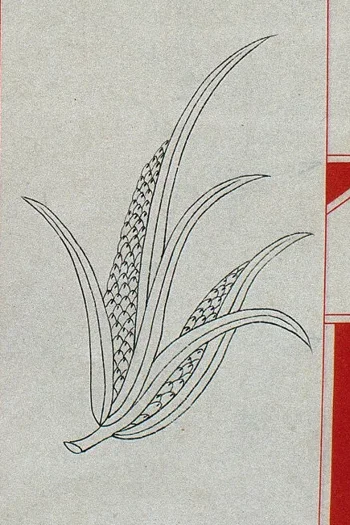

一座可以亲手探索的本草展馆DIGITAL EXHIBITION / VOL. 01
循古籍之文问草木之性
明医格物本草
新生
一草一木，皆有可循之理。
从一页古籍，到一场指尖实验。
在草木的气味、温度与时间里，
重新认识千年本草的科学之美。
06互动主题08本草标本让传统可感知，让科学可触碰

明 · 本草品汇精要山姜图 / 馆藏局部
杏林五传 / 01扁鹊战国 · 四诊合参
六卷本草
EXPLORE THE CHAPTERS策展说明 ↗
EXPLORE THE CHAPTERS策展说明 ↗